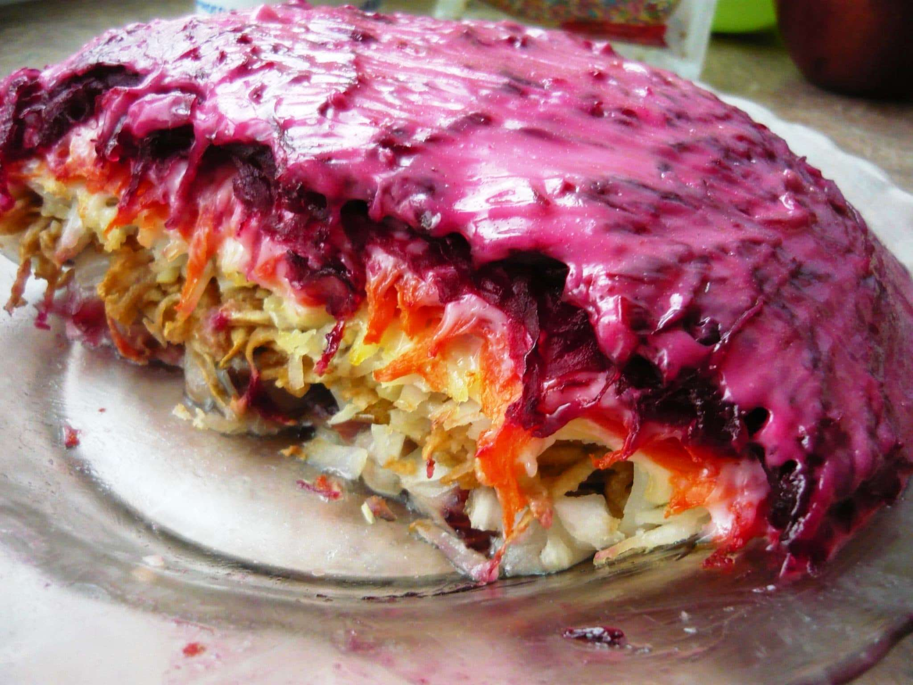

Herring under the Winter Coat Salad

Description
This Russian herring salad is commonly known as a "Herring under the Winter Coat Salad." It is a must for every Russian holiday, however, you have to have a taste for herring and beets. Every Russian craves this salad, but my American hubby doesn't care for it. I use a clear bowl for this salad so that you could see all ingredients in it.
Submitted by Evgeniya Published on April 2, 2019
Ingredients
- 3 whole russet potatoes
- 2 large carrots, peeled
- 2 beets, washed with tops and bottoms removed
- ½ yellow onion, chopped
- 1 (12 ounce) jar herring fillets, packed in oil
- 6 tablespoons mayonnaise
- salt and ground black pepper, to taste
Directions
- Bring a large pot of water to a boil. Cook potatoes, carrots, and beets in boiling water until cooked but still firm, 15 to 20 minutes for potatoes, 25 to 30 minutes for carrots, and 40 minutes for beets. Allow each to cool to the touch before further handling. Remove and discard skins from potatoes and beets. Shred potatoes, carrots, and beets, keeping them separate.
- Arrange about half the onions and half the herring fillets in a layer in the bottom of a bowl. Cover the layer with about half of grated potatoes, then a layer of about half the carrots, and finally about half the beets. Spread about 3 tablespoons of mayonnaise over salad; season with salt and pepper. Repeat layers in the same order to finish building salad. Cover with plastic wrap and chill in the refrigerator at least 1 hour. Serve cold.